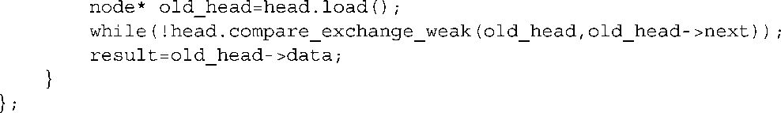

第7章 设计无锁的并发数据结构
本章主要内容
- 为无需使用锁的并发而设计的数据结构的实现
- 在无锁数据结构中管理内存的技术
- 有助于编写无锁数据结构的简单准则
上一章中，我们分析了为实现并发性设计数据结构时需要考虑的一般方面，考虑了这种设计确保安全的准则。然后，我们验证了几种常见的数据结构，并且分析了使用互斥元和锁来保护共享数据的实现的例子。在前面的几个例子中，使用一个互斥元来保护整个数据结构。在后面的几个例子中，使用多个互斥元来保护数据结构的多个小部分，并且在访问数据结构时允许了更大级别的并发。
互斥元是保证多个线程可以安全访问数据结构，而不会遇到竞争条件和破坏不变量的有效机制。在探讨使用它们的代码的行为时也相对较简单，代码要么让保护数据的互斥元锁定，要么就不这样。然而，这也并不全然那么好。第3章中，看到了锁的不当使用会如何导致死锁，并且在基于锁的队列和查找表的例子中，可以看出锁的粒度是如何影响真正并发的潜能。如果能设计出不使用锁就能实现安全并发存取的数据机构，就有可能避免这些问题。这种数据结构被称为无锁 数据结构。
在本章中，我们将考虑如何将第5章中提到的原子操作的内存顺序特性应用到无锁数据结构的构造中。设计这种数据结构时需要特别小心，因为很难做得正确，并且导致设计失败的条件可能很少发生。首先，我们来了解数据结构无锁的含义。然后，在分析一些实例之前，我们会介绍使用它们的原因，并得出一些通用准则。
7.1 定义和结果
使用互斥元、条件变量以及future来同步数据的算法和数据结构被称为阻塞（blocking） 的算法和数据结构。调用库函数的应用会中断一个线程的执行，直到另一个线程执行一个动作。这种库函数调用被称为阻塞 调用，因为直到阻塞被释放时线程才能继续执行下去。通常，操作系统会完全阻塞一个线程（并且将这个线程的时间片分配给另一个线程）直到另一个线程执行了适当的动作将其解锁 ，可以是解锁互斥元、通知条件变量或者使得future就绪 。
不使用阻塞库函数的数据结构和算法被称为非阻塞（nonblocking） 的。但是，并不是所有这样的数据结构都是无锁（lock-free） 的，因此我们来看一看非阻塞数据结构的各种类型。
7.1.1 非阻塞数据结构的类型
第5章中，我们实现了一种使用std::atomic_flag
作为自旋锁的基本互斥元。清单7.1中复刻了该代码。
清单7.1 使用std::atomic_flag的自旋锁互斥元的实现
这段代码不调用任何阻塞函数，lock()
一直循环直到对test_and_set()
的调用返回false
。这就是自旋锁（spinlock）
名称的由来——代码围绕着循环“旋转”。无论如何，这里没有阻塞调用，因此任何使用此互斥元来保护共享数据的代码因而都是非阻塞
的。然而，它并非无锁
的。它仍然是一个互斥元，并且一次仍然只能被一个线程锁定。我们来看看无锁
的定义，这样就能明白哪些类型的数据结构是
被涉及的。
7.1.2 无锁数据结构
对于有资格称为无锁的数据结构，就必须能够让多于一个线程可以并发地访问此数据结构。这些线程不需要做相同的操作，无锁队列可以允许一个线程push的同时另一个线程pop，但是如果两个线程同时试图插push新数据项的时候，就会打破无锁队列。不仅如此，如果一个访问数据结构的线程在操作中途被调度器挂起的话，别的线程必须仍然能够完成操作而无需等待挂起的线程。
在数据结构上使用比较/交换操作的算法经常在其中包含循环。使用比较/交换操作是因为有可能另一个线程正在同时修改数据，这种情况下，代码就需要在试图重新比较/交换前重做部分操作。如果比较/交换操作最终在其他线程都被中断的情况下成功，那么这种代码仍然是无锁的。如果没有，最起码要使用自旋锁，是非阻塞的而不是无锁的。
具有这种循环的无锁算法可能会导致一个线程承受饥饿 。如果另一个线程在“错误的”时间执行操作，那么当第一个线程持续重试其操作时，别的线程则可以继续前进。能够避免此类问题的数据结构是无等待，也是无锁的。
7.1.3 无等待的数据结构
无等待的数据结构是一种无锁的数据结构，并且有着额外的特性，每个访问数据结构的线程都可以在有限数量的步骤内完成它的操作，而不用管别的线程的行为。因为其他线程的冲突而可能卷入无限次重试的算法不是无等待的。
正确地编写无等待的数据结构是极其困难的。为了确保每个线程都能够在有限步骤内完成它的操作，就必须保证每个操作都可以在一个操作周期内执行，并且一个线程执行的操作不会导致另一个线程上操作的失败。这会使得各种操作的整体算法变得相当复杂。
鉴于正确地设计无锁或无等待数据结构是如此困难，你需要一些很好的理由来支撑这一点；你需要确信收益胜于代价。所以，让我们来检验影响此平衡的重点。
7.1.4 无锁数据结构的优点与缺点
到了这一步，使用无锁数据结构的最主要的原因就是为了实现最大程度的并发。对于基于锁的容器，总是有可能一个线程必须阻塞，并在可以继续前等待另一个线程完成其操作。互斥元锁的目的就是通过互斥来阻止并发。使用无锁数据结构时，某些 线程一步步地执行操作。使用无等待数据结构时，不管别的线程在做什么操作，每个线程都可以继续执行而不需要等待。这是一种很希望得到但是却很难得到的特性。都很容易在编写基本的一个自旋锁时告终。
使用无锁数据结构的第二个原因是健壮性。当一个线程在持有锁的时候终止，那个数据结构就永远被破坏了。但是如果一个线程在操作无锁数据结构时终止了，就不会丢失任何数据，除了此线程的数据之外，其他线程可以继续正常执行。
另一方面，如果不能排除线程访问数据结构，那么就必须确保持有不变量或选择可以持有的替代的不变量。并且，必须注意你加于操作上的顺序限制。为了避免与数据竞争有关的未定义行为，你就必须在修改时使用原子操作。仅仅如此还是不够的，你必须确保这个改变以正确的顺序对其他线程是可见的。所有这些都意味着设计线程安全数据结构时，不使用锁比使用锁要困难的多。
因为不使用任何锁，因此无锁数据结构是不会发生死锁的，尽管有可能存在活锁。当两个线程都试图修改数据结构，但是对于每个线程来说，另一个线程所做的修改都会要求此线程的操作重新被执行，因此这两个线程都会一直循环和不断尝试，在这种情况下就会发生活锁。除非某个线程先到达（通过协议，通过更快，或完全靠运气），不然此循环会一直继续下去。在这个简单的例子中，活锁通常是短暂的，因为它们取决于线程的精确调度。因此，活锁会降低性能而不会导致长期的问题，但是也是需要注意的事情。根据定义，无等待的代码无法忍受活锁，因为它执行操作的步骤数通常是有上限的。另一方面，这种算法比别的算法更复杂，并且即使当没有线程存取数据结构的时候也需要执行更多的步骤。
这就带来了无锁和无等待代码的另一个缺点，尽管它可以增加在数据结构上操作的并发能力，并且减少了线程等待的时间，但是它可能降低 整体的性能。首先，无锁代码使用的原子操作可能比非原子操作要慢很多。并且与基于锁数据结构的互斥元锁代码相比，无锁数据结构中需要更多的原子操作。不仅如此，硬件必须在存取同样的原子变量的线程间同步数据。正如你将在第8章中看到的，与多个线程存取同样的原子变量相关的乒乓缓存可能会成为一种显著的性能消耗。总而言之，在选择任何一种方式前，检查基于锁的数据结构和无锁数据结构的相关性能方面（是否为最坏等待时间，平均等待时间，总的执行时间，或其他方面）是很重要的。
下面我们来看一些例子。
7.2 无锁数据结构的例子
为了展示在设计无锁数据结构时使用的一些技术，我们来看一些简单数据结构的无锁实现。我们不仅举例子描述了一系列有用的数据结构的实现，而且将举例子强调无锁数据结构设计中比较特殊的部分。
就像之前提到的，依赖于使用原子操作的无锁数据结构，以及与之相关联的内存顺序保证是为了确保数据以正确的顺序对其他线程可见。起初，我们为所有原子操作都使用默认的memory_order_seq_cst
内存顺序，因为这是最简单的（记住所有的memory_order_seq_cst
操作构成了全局顺序）。但是在后来的例子中，我们考虑降低一些排序约束到memory_order_acquire
、memory_order_release
，甚至memory_order_relaxed
中。尽管在这些例子中都未直接使用互斥元锁，但是需要记住的是，只有std::atomic_flag
保证在实现中是不使用锁的。在一些平台上，有些看上去无锁的代码，实际上却可能使用了C++标准库实现的内部锁（参见第5章）。在这些平台上，一个简单的基于锁的数据结构可能更适合。但是还有比这更重要的是，在选择一种实现的时候，必须先确定你的要求，然后考虑有哪些选择可以满足此要求。
因此，我们追溯到一种最简单的数据结构：栈。
7.2.1 编写不用锁的线程安全栈
栈的基本假设是相当简单的，按照添加结点的逆序来检索结点——后进先出（LIFO）。因此，确保一次只添加一个值到栈中是很重要的。另一个线程可以立刻检索结点，并且确保只有一个线程返回给定的数值是很重要的。最简单的栈是一个链表，head
指针指向第一个结点（这个结点将被第一个检索），并且每个结点都按顺序指向下一个结点。
在这种原则下，添加一个节点相对比较简单。
1 创建一个新结点。
2
将它的next
指针指向当前的head
结点。
3
将head
结点指向此新结点。
在单线程环境中，这种方法是可以的。但是如果别的线程也在修改栈，那么这种方法就不行了。最重要的是，如果两个线程同时添加结点，那么在第2步和第3步间就会存在竞争条件。当你的线程在第2步读取头结点和第3步更新头结点之间，第二个线程可能会修改head
的值。这就会导致另一个线程所做的修改无效或者有更坏的影响。在我们考虑解决这一竞争条件之前，请注意一旦head
被更新指向你新创建的结点，别的线程就可以读取该结点。因此，在head
指向新结点之前
将新结点完全准备好也是至关重要的，以后就无法修改此结点了。
那么，我们能够如何处理此竞争条件呢？答案就是在第3步中使用一个原子比较/交换操作来保证从你在第2步中读取它开始，head
就未被修改过。如果head
被修改了，那么可以循环和再次尝试。清单7.2给出了如何实现不使用锁的线程安全push()
。
清单7.2 实现不使用锁的线程安全push()
这段代码恰好符合了上面提到的三点计划：创建一个新节点❷，将新结点的next
指针指向当前的head
❸，将head
指向这个新结点❹。通过在node
构造函数❶中填充node
结构体的数据，这就可以保证node
一被构造好就可以被使用，因此这个简单的问题就被解决了。然后使用compare_exchange_weak()
来确保head
指针的值与new_node->next
❸的值是一样的。如果这两个值是一样的，那么将head
指向new_node
。这段代码中使用了比较/交换函数的一部分，如果它返回false
则表明此次比较没有成功（例如，因为另一个线程修改了head
）。此时，第一个参数（new_node->next
）的值将被更新为head
当前的值。因此，通过此次循环，就不需要你每次重载head
，因为编译器已经做了此项操作。同样，因为失败时只需要直接循环，因此可以使用compare_exchange_weak
。在某些架构下，它比compare_exchange_strong
能够产生更优化的代码（如第5章所示）。
因此，在没有pop()
操作的情况下，先按照准则来快速检查一下push()
。唯一能引发异常的地方就是构造新结点的时候❶。但是它之后会清除这些，并且链表没有被修改，因此这是非常安全的。因为你建造的数据将被存储为node
的一部分，并且可以使用compare_exchange_weak()
来更新head
指针，因此这里没有成问题的竞争条件。一旦比较/交换函数成功了，结点就被插入链表并可以被使用了。这里没有使用锁，因此不会产生死锁，并且push()
函数出色地实现了功能。
当然，现在已经有了在栈中增加数据的方法，还需要在栈中移出数据的方法。从表面上看，这要简单一些。
1
读取head
当前的值。
2
读取head->next
。
3
将head->next
设置为head
。
4 返回检索到的结点的值。
5 删除检索到的结点。
然而，在存在多个线程的情况下，这个问题就不这么简单了。如果同时有两个线程从栈中移出元素，他们可能在第1步中同时读取了相同的head
值。如果一个线程在其他线程执行第2步前顺利执行到第5步，那么第二个线程将被解引用悬挂指针。这是写无锁代码中最大的问题之一。因此从现在开始，先忽略第5步并且先不删除结点。
但是，这也没有解决掉所有的问题。这里存在着另一个问题，如果两个线程读取同一个head
值，那么它们将会返回同一个结点。这就违背了栈数据结构的目的，因此必须避免发生这种情况。你可以用push()
中使用的方法来解决竞争，使用比较/交换来更新head
。如果比较/交换失败了，要么是因为在栈中插入了一个新结点，要么是因为另一个线程从栈中移出了你打算移出的结点。无论是哪一种情况，都需要返回到第1步（尽管比较/交换调用可以重新读取head
）。
一旦比较/交换调用成功了，那么这就是唯一的从栈中移出指定结点的线程。因此可以安全地执行第4步。pop()
如下所示。

尽管这种方法很好很简明，但是除了未删除的结点外还有一些别的问题。首先，当链表为空时它就行不通了，如果head
是空指针，那么当它试图读取next
指针时就会导致未定义的行为。这也很容易通过在while
循环中检查空指针来解决。可以同时在空栈上引发异常或者返回一个bool
来表明成功或失败。
第二个问题就是异常安全问题。当我们在第3章中首次介绍线程安全栈时，你可以看出只通过值返回对象会留下一个异常安全问题，当复制返回值的时候，如果引发了异常，那么此值就会被丢失。在这种情况下，传递对值的引用是一种解决方法。因为如果抛出异常的话，这可以确保栈不会被修改。可惜，这里不能使用这种方法。一旦你知道这是唯一一个返回结点的线程，你就可以安全地复制数据了。这就意味着这个结点已经被移出队列了。因此，通过引用传递返回值的对象就不再是一个优势了，当然也可能只是返回值。如果想安全地返回值，就必须使用第3章中提到的另一个方法，返回一个指向数据值的（智能）指针。
如果返回智能指针，那么就可以只返回空指针来表明没有返回值，但是这就要求数据是在堆上被分配的。如果将堆分配作为pop()
的一部分，你仍然
没有做得更好，因为堆分配也可能会引发异常。反而，当把数据push()
进栈时，可以为此数据分配内存——反正都要为结点分配内存。返回std::shared_ptr<>
不会引发异常，因此pop()
是安全的。将这些总结起来得到清单7.3所示的代码。
清单7.3 缺少结点的无锁栈
数据现在由指针持有❶，因此需要在结点构造函数中在堆上分配数据❷。在compare_exchange_weak()
循环中解引用old_head
前，必须检查空指针。最后，如果存在与结点相关的值，那么就返回该值，否则就返回一个空指针。注意，尽管这是无锁
的，但是它不是无等待
的，因为在push()
和pop()
的while
循环中，如果compare_exchange_weak()
一直失败的话，理论上可以一直循环下去。
如果有垃圾回收器在你后面打点（比如在C#或Java这样的托管语言中），那么此工作就已完成了。一旦没有线程存取此结点，那么旧的结点被收集并被再次利用。然而，没有多少C++编译器有垃圾回收器，因此通常需要自己整理。
7.2.2 停止恼人的泄漏：在无锁数据结构中管理内存
我们首先观察pop()
，当一个线程删除结点，而另一个线程仍然持有指向此结点的指针时，我们选择泄漏结点来避免竞争条件，那么就只能解引用了。尽管如此，在任何合理的C++程序中，泄漏内存都是不可接受的。因此，我们必须做一些事。现在该考虑这个问题并且找出解决办法了。
最基本的问题就是，你想释放一个结点，但是直到你确保没有别的线程持有指向此结点的指针的时候，你才能释放此结点。如果只有一个线程曾经在一个特定的栈实例上调用pop()
，那么可以自由释放此结点。一旦结点被添加到栈中，push()
就不会再操作此结点了。因此调用pop()
的线程就一定是唯一一个操作此结点的线程，并且可以安全地删除此结点。
另一方面，如果需要处理多个线程在同一个栈实例上调用pop()
的情况，那么就需要一些方法来追踪何时可以安全地删除结点。这就从根本上意味着你需要为结点写一个专用的垃圾回收器。现在，这可能听上去很可怕，尽管它确实很讨厌，但是也不是太糟糕。只需要检查结点，并且只检查在pop()
中存取的结点。不需要担心在push()
中存取的结点，因为它们只能被一个线程存取，直到它们在栈上为止。然而，多个线程可能在pop()
中存取同一个结点。
如果没有线程调用pop()
，那么可以删除目前等待删除的所有结点。因此，当你获得数据时，如果将此结点添加到“将被删除”的列表中，那么当没有线程调用pop()
时就可以删除它。如何知道有没有别的线程在调用pop()
呢？有个简单的方法——数清数目。如果在进入的时候计数器加一，在离开的时候计数器减一。那么当计数器为零的时候，就可以安全地删除“将被删除”列表中的结点。当然，此计数器必须为原子计数器，从而可以安全地被多个线程存取。清单7.4给出了修改后的pop()
函数，并且清单7.5列出了此实现的支撑函数。
清单7.4 当pop()中没有线程时回收结点
原子变量threads_in_pop
❶被用作计数目前有多少线程试图从栈中移出数据项。在pop()
开始的地方❷增加计数器，在try_reclaim()
中减少计数器，而一旦结点被移出的时候就会调用此函数❹。因为可能将延迟删除结点，因此可以使用swap()
来将数据从结点中删除❸，而不是仅仅复制指针。因此当不再需要时可以自动地删除此数据，而不会因为存在对未删除结点的引用而一直保持它。清单7.5给出了try_reclaim()
的内部实现。
清单7.5 引用计数的回收机制
当回收结点时，如果threads_in_pop
的值为1➊，那么在pop()
中这就是唯一的线程，这就意味着可以安全删除刚移动出来的结点➐，并且可能安全地删除等待的结点。如果计数器的值不为1，那么删除任何结点都不安全，因此将此结点加入到等待的列表中➑。
现在假设threads_in_pop
的值为1。此时需要回收等待的结点；如果不回收，那么这些结点将一直等待直到栈被销毁。回收结点时，首先用原子操作exchange
来查找列表➋，然后将threads_in_pop
的计数减一➌。如果计数减一后值为零，就可以得知没有别的线程存取此等待结点列表。可能会有新的等待结点，但是只要回收列表是安全的，就不需要操心这些新的等待结点。然后，调用delete_nodes
来迭代此列表，并且删除结点➍。
如果计数减一后值不
为零，那么回收结点就不安全了。因此如果此时有等待的结点➎，那么就将此结点插入到等待删除结点列表的尾部➏。当多个线程同时存取数据结构时就有可能发生这种情况。别的线程可能在第一次取threads_in_pop
值➊和查找列表➋之间调用pop()
。这就可能在列表中增加新的结点，并且此结点被一个或多个线程存取。在图7.1中，线程C增加结点Y至to_be_deleted
列表中，即使线程B仍然引用结点Y作为old_head
，并且会读取此结点的next
指针。因此线程A在删除结点的时候不可避免地会造成线程B未定义的行为。
图7.1 三个线程并发调用pop()，在回收try_reclaim()中删除的结点之后必须检查threads_in_pop。
为了将等待删除的结点链接到等待列表中，需要重新使用结点的next
指针来将它们链接起来。对于重新链接一个已存在链表到列表尾部，则需要遍历链表来找到尾部➒，用当前的to_be_deleted
指针来替代最后一个结点的next
指针➓，并且存储链表中的第一个结点作为新的to_be_deleted
指针⓫。必须在循环中使用compare_exchange_weak
来确保没有遗漏其他线程添加的结点。这种做法的好处是当链表发生变化时，从链尾更新next
指针。在链表中添加一个结点是一种特殊情况，即链表中添加的第一个结点与最后一个结点是相同的⓬。
在低负载的情况下，即当没有进程在调用pop()
这样一种合适的静态点的时候，这种方法是很有效的。尽管如此，在回收结点和删除刚移出的结点之前
➐都需要检查threads_in_pop
计数器是否减少为零➌，这是因为这种状态是很短暂的。删除结点是一种会消耗一定时间的操作，并且别的线程修改列表的窗口越小越好。在线程第一次发现threads_in_pop
的值为1与试图删除结点之间的时间越长，别的线程调用pop()
以及threads_in_pop
的值不再为1的可能性就越大，因此就阻止了此结点被真正的删除。
在高负载的情况下，因为在其他线程调用pop()
结束之前就会有别的线程调用pop()
，因此基本上不可能
有这种静止状态。在这种情况下，to_be_deleted
列表很容易就越界了，并且再次内存泄露。如果没有任何静止状态，那么就需要用别的方法来回收结点。关键点就是识别没有别的线程将访问某个特定的结点，那么就可以回收此结点了。迄今为止，最简单的方法就是使用风险指针（hazardpointers）
。
7.2.3 用风险指针检测不能被回收的结点
术语风险指针（hazardpointers） 是Maged Michael [1] 提出的一种技术。基本思想就是如果一个线程准备访问别的线程准备删除的对象，那么它会用风险指针来引用对象，因此就可以通知别的线程删除此对象可能是有风险的。如果别的线程引用此结点，并且准备通过此引用来访问结点，那么删除一个可能仍然被别的线程引用的结点是有危险的，因此它们被称为风险指针。一旦不再需要此对象，风险指针就会被清除了。如果你看过牛津/剑桥划船比赛，就可以发现当比赛开始时使用了一个相似的方法：每艘船的舵手都可以举手示意他们没有准备好。当任何一个舵手举手的时候，裁判都不能开始比赛。如果舵手都没有举手，那么就可以开始比赛了。但是只要比赛尚未开始，任何一个舵手都可以举手。此时情况就会发生改变。
当线程试图删除一个对象时，它必须首先检查别的线程所持有的风险指针。如果没有风险指针引用此对象，那么就可以删除此对象。否则，它必须之后才能被处理。周期性地检查对象列表来确定现在是否可以删除它。
用这种方式描述的时候是比较简单明了的，那么在C++中如何实现呢？
首先，需要一块共享内存来存储正在访问对象的指针，即风险指针本身。此地址必须对所有线程可见，并且每个访问此数据结构的线程都需要其中一段内存。如何正确并且有效地分配它们，我们会在后面章节介绍。先假设已经有这样一个函数get_hazard_pointer_for_current_thread()
，它返回风险指针的引用。当线程试图解引用正在读取的指针的时候，需要设置它的风险指针。在这里我们以解引用列表的head
值为例。
在while
循环中，确保在读取旧的head
指针❶和设置风险指针❷之间，结点未被删除。在此窗口内，别的线程不知道你正在读取这个特定的结点。幸运的是，如果旧的头指针将被删除，那么头结点肯定会发生改变，因此必须持续循环直到确定头指针与之前设置的风险指针相同❸。使用风险指针取决于当它引用的对象被删除后，仍然可以安全地使用此指针。如果使用缺省的new
和delete
实现，那么就会导致未定义的行为。因此，需要确保你的实现可以保证这一点，或者使用允许这种行为的自定义分配器。
现在，我们已设置好风险指针，就可以完成pop()
中剩余的代码。此时没有线程将会删除你所占用的结点了。那么每次重载old_head
，都需要在解引用新读取的指针前更新风险指针。一旦从列表中获得了结点，就可以清除风险指针。如果此时没有别的风险指针引用此结点，就可以安全删除此结点。否则，就将此结点加入等待稍后删除的结点列表。清单7.6演示了使用此策略的pop()
的完整实现。
清单7.6 使用风险指针的pop()实现

首先，将设置风险指针放到外部循环中，如果比较/交换失败，则重载old_head
❶。这里使用compare_exchange_strong()
是因为在这个while
循环中确实有效，compare_exchange_weak()
中虚假的错误会导致不必要地重置风险指针。这就确保了在解引用old_head
前设置了正确的风险指针。一旦声明此结点是你的，就可以清除你的风险指针❷。如果你得到一个结点，就需要检查别的线程拥有的风险指针是否引用它❸。如果存在这样的风险指针，那么必须将它放入到稍后回收的列表中❹。否则，就可以立刻删除它❺。最后，调用reclaim_late()
来检查所有结点。如果没有别的风险指针引用这些结点，那么可以安全删除它们❻。任何有风险指针的结点都将留待下一个线程调用pop()。
当然，在这里有很多新函数——get_hazard_pointer_for_current_thread()
、reclaim_later()
、outstanding_hazard_pointers_for()
，以及delete_nodes_with_no_hazards()
中有很多细节部分——让我们来了解这些函数并且看看它们是如何工作的。
调用get_hazard_pointer_for_current_thread()
给线程分配风险指针的具体机制并不影响程序的逻辑（稍后就可以看到对效率有影响）。因此我们先用一个简单的结构来实现，一个固定大小数组存放线程ID和指针对。get_hazard_pointer_for_current_thread()
检索整个数组来寻找第一个空闲的位置，并且将此位置的ID值设为当前线程的ID。当线程退出时，此位置的ID值被重置为默认值std::thread::id()
，从而此位置就被释放出来了，如清单7.7所示。
清单7.7 get_hazard_pointer_for_current_thread()的简单实现
get_hazard_pointer_for_current_thread()
的实现看似简单，其实不然❸：它用hp_owner
❹类型的thread_local
变量来存储当前线程的风险指针。然后它返回此对象的指针❺。它的原理如下：每个线程第一次调用此函数的时候，创建一个新的hp_owner
实例。这个新实例构造器搜索所有者/指针对的表格来寻找一个值，此值没有所有者。它使用compare_exchange_strong()
来检查没有所有者的值并且获得它❷。如果compare_exchange_strong()
失败了，那么就说明另一个线程拥有此值，那么就需要去检查下一个值。如果compare_exchange_strong()
成功了，那么当前线程就成功获得此值。此时就存储此值，并且停止检索❸。如果在整个列表中都没有找到一个空闲的值❹，那么就表示有太多线程使用了风险指针，此时就抛出异常。
一旦为一个给定的线程创造了hp_owner
实例，那么之后的存取就变得更快了，因为缓存了指针，就不需要再次扫描表格了。
当每个线程退出时，为该线程创造的hp_owner
实例就被销毁了。析构函数在设置所有者的ID的值为std::thread::id()
前将指针的值重置为nullptr
，这样稍后别的线程就可以重新使用此值❺。
用这种方式实现get_hazard_pointer_for_current_thread()
，那么outstanding_hazard_pointer_for_current_thread()
的实现就变得简单了，只需要检索整个风险指针表来寻找这个位置。
现在甚至都不需要检索表来得知每个位置是否拥有所有者，没有所有者的位置将会有一个空指针，因此这个比较函数将返回false
，这样就简化了代码。
在简单链表中，reclaim_later()
和delete_nodes_with_no_hazards()
可以工作，reclaim_later()
只添加结点至列表中，delete_nodes_with_no_hazards()
扫描整个列表，删除没有风险的值。清单7.8就是一个实现。
清单7.8 回收函数的简单实现
首先，我希望你发现reclaim_later()
不是一个普通的函数，而是一个函数模板❹。这是因为风险指针是一种通用的工具，因此不希望绑定到具体的结点。你已经使用std::atomic<void>
来存储指针了。因此需要处理任何指针类型，但是不能使用void
类型。因为当你删除数据项的时候，delete
函数需要指针的实际类型。date_to_reclaim
的构造器可以很好地处理这个问题，就如以下所示。reclaim_later()
只需要为你的指针生成一个新的date_to_reclaim
实例，并且将它加入到回收列表中❺。add_to_reclaim_list()
本身❸是一个基于列表头结点的简单compare_exchange_weak()
循环。
因此，回到data_to_reclaim
的构造函数❶，这个构造函数也是一个模板。它将被删除数据存储为data
成员的void
类型。然后存储指向do_delete()
实例的指针。do_delete()
是一个简单的函数，将提供的void
类型确定为选好的指针类型，然后删除它所指向的对象。std::function<>
可以安全地实现这个函数指针，因此data_to_reclaim
的析构函数可以调用存储的函数来删除数据❷。
当你在列表中增加结点时，不会调用data_to_reclaim
的析构器。当没有风险指针指向此结点时就会调用此析构函数。这是delete_nodes_with_no_hazards()
的责任。
delete_nodes_with_no_hazards()
首先用一个简单的exchange()
来声明所有将被回收的结点列表❻。这一简单但是关键的步骤确保了这是将回收这个结点集合的唯一线程。别的线程可以自由向列表中增加结点或者试图回收它们，并且不会影响此线程的操作。
然后，只要列表中仍然有结点，就轮流检查每个结点来看是否存在风险指针❼。如果没有，则安全删除此位置的值（即清除了存储的数据）❽。否则，就将此项增加到稍后回收列表中❾。
尽管这种简单实现能够安全回收删除的结点，但是它会增加很多处理难度。扫描风险指针数组需要检查max_hazard_pointers
原子变量，并且每次调用pop( )的时候都会执行这个操作。原子操作必定是很慢的——通常在计算机CPU上运行时会比实现同样效果的非原子操作慢100倍——这就使得pop()
变成很耗资源的操作。不仅需要扫描将要删除结点的风险指针列表，而且需要扫描等待列表中每个结点的风险指针列表。这当然不是个好主意。如果列表中有max_hazard_pointers
个结点，那么就得扫描这些结点存储的风险指针。天啊！必须找到一种更好的方法。
使用风险指针的更佳的回收策略
当然，有更好的方法。这里我将介绍一种简单的风险指针实现来解释这种机制。第一件事就是用内存资源换取效率。你不再试图回收任何结点除非表中的结点数多于max_hazard_pointers
，而不再每次都调用pop()
来检查回收列表中每个结点。用这种方式可以保证至少回收一个结点。如果只是等到表中有max_hazard_pointers+1
个结点，这种方法也没有更好。一旦你得到max_hazard_pointers
个结点，就开始调用pop()
来回收结点，这种方法也没有更好。但是如果你等到表中有2*max_hazard_pointers
个结点，就可以确保收回至少max_hazard_pointers
个结点，并且在你回收任何结点前至少会max_hazard_pointers
次调用pop()
。这种方法就比较好了。你在max_hazard_pointers
次调用pop()
的时候都会检查2*max_hazard_pointers
个结点，并且至少回收max_hazard_pointers
个结点。而不需要每次调用push()
的时候检查max_hazard_pointers
个结点。这样是很有效的，每次调用pop()
都会检查两个结点，回收一个结点。
这种方案也有缺点（除了增加内存使用），需要计数回收列表中的结点，这就意味着要使用原子计数，并且多个线程还在竞争访问此回收列表。如果有共享内存，就可以用增加的内存使用换取一个更好的回收策略。每个线程在线程本地变量上有自己的回收列表。因此就不需要用来计数的原子变量以及存取列表。相对的，就分配了max_hazard_pointers*max_hazard_pointers
个结点。如果线程在回收完它所有的结点前退出了，它们就可以像以前一样存储在全局列表中，并且加入到下一个执行回收操作的线程的本地列表中。
风险指针的另一个缺点是他们涉及到IBM提交的专利申请 [2] 。如果在一个承认此专利有效的国家写软件，那么就需要确保获得一个合适的许可。一些无锁内存回收机制可以共用此技术。这是一个很活跃的研究领域，很多公司都在竭尽所能地提交专利申请。你可能会提出这样的疑问，为什么我花了这么多篇幅介绍一种很多人都不能使用的一种技术，这是一个合理的问题。首先，有可能在不获得许可的情况下使用该技术。例如，如果你在GPL [3] 下开发免费软件，你的软件可以被IBM的非不主张条款 [4] 所覆盖。就可以使用该技术。第二，更重要的一点是，对这项技术的解释展示了在写无锁代码的时候需要考虑哪些重要的事情，如原子操作的开销。
因此，是否存在可以用在无锁代码的非专利内存技术？幸运的是，确实有。一种技术就是引用计数。
7.2.4 使用引用计数检测结点
回顾7.2.2节，删除结点的问题就在于检测哪些结点正在被别的线程读取。如果可以精确识别出哪些结点正在被引用以及何时没有线程读取这些结点，那么就可以删除此结点。风险指针通过存储读取每个结点的线程数来处理此问题。引用技术通过存储一定数量的线程读取结点来处理这个问题。
这种方法看上去更好更直接，但是在实际中很难处理。首先，你可能认为std::shared_ptr<>
可以处理这种问题；毕竟，这是一个引用计数指针。不幸的是，尽管std::shared_ptr<>
中的一些操作是原子的，但是它们不能保证是无锁的。尽管这与原子类型上的任何操作并没有不同，但是在许多情况下std::shared_ptr<>
被使用，并且使得原子操作是无锁的会导致使用这个类有花费。如果你的平台提供这样一个实现，即当std::atomic_is_lock_free(&some_shared_ptr)
返回true
，所有的内存回收事件都离开。如清单7.9所示，其中只使用std::shared_ptr<node>
。
清单7.9 使用无锁的std::shared_ptr<>的无锁栈实现
在可能的情况下，std::shared_ptr<>
实现不是无锁的，需要手工处理引用计数。
一种可能的技术涉及为每个结点使用不止一个而是两个引用计数，一个内部计数和一个外部计数。这两个计数值之和是结点总的引用数。外部计数始终与结点指针在一起，并且每次读取指针的时候外部计数增一。当读取结点结束时，内部计数减一。读取指针这样一个简单操作会导致外部计数增一，并且在此操作结束时内部计数减一。
当内部计数/指针对不在需要时（即多个线程不再访问结点时），内部计数增加外部计数的值减一，并废除外部计数。一旦内部计数的值为零，就没有引用结点，此时可删除此结点。使用原子操作来更新共享数据也是很重要的。现在我们来看一个使用这种技术来确保结点只会被安全收回的无锁栈的实现。
更好的内部数据结构和push()
的实现如清单7.10所示。
清单7.10 在使用两个引用计数的无锁栈中入栈结点
首先，在counted_node_ptr
结构中包含了外部变量与结点的指针❶。在node结构体❸中将使用counted_node_ptr
类型的next
指针以及内部变量❷。因为counted_node_ptr
是一种简单的结构，因此在std::atomic<>
模板中使用它作为列表的头结点❹。
在这些支持双字比较和交换操作的平台上，这个结构足够小，使得std::atomic<counted_node_ptr>
是无锁的。如果不是在你的平台上，那么最好使用清单7.9中提到的std::shared_ptr<>
，因为当类型太大使得平台的原子指令不能实现时，std::atomic<>
将使用一个互斥元来保证原子性（因此最后使得你的“无锁”算法变成基于锁的算法）。或者，如果你想限制计数的位数，并且你知道你的平台中指针有空闲位（例如，地址空间只有48位但是指针有64位），你可以在单个字中将计数存储在指针的空闲位中。这种方法需要与平台相关的知识，这就超出了本书的范围了。
push()
相对简单一些❺。构造一个指向新分配结点的counted_node_ptr
，并将它的next
赋值为当前的head
。之后用compare_exchange_weak()
来给head
赋值，就像之前的清单所示。设置计数器时，将内部计数设为零，外部计数设为一。因为这是新创建的结点，只有一个外部引用（即head
本身）。
同理，pop()
的实现也复杂了一些，如清单7.11所示。
清单7.11 使用两个引用计数从无锁栈中出栈一个结点
这里，一旦你载入了head
的值，就必须将引用此head
结点的外部计数的值增一，用以表明你引用了此结点并且确保解引用是安全的。如果在增加引用计数前
解引用此指针，那么另一个线程就可以在你读取这个结点前释放该结点，因此使得它变成悬挂指针。这是使用两个分开的引用计数的主要原因
。通过增加外部引用计数，就可以保证直到你访问时指针仍然是有效的。在compare_exchange_strong()
循环内部增加计数的值❶，确保了没有别的线程在此时改变它。
一旦增加了计数，为了访问它指向的结点，可以安全解引用从head
载入的ptr
的值❷。如果指针为空，表明位于链表的尾部没有位置了。如果指针不为空，就可以通过在head
上调用compare_exchange_strong()
来移动结点❸。
如果compare_exchange_strong()
成功了，就可以拥有该结点，并且交换出data
以备以后返回它❹。这就确保了就算别的线程读取栈的时候一直持有指向此结点的指针，data
也不需要一直保持。然后就可以使用原子操作fetch_add
将结点外部计数的值加到内部计数上❻。如果当前引用计数的值为零，那么先前
你增加的值（即fetch_add
的返回值）就是负数，此时就可以删除这个结点。请注意你增加的值比外部计数的值减少2
❺。你已经从列表中移出了结点，因此计数减一，并且这个线程不在读取这个结点，因此计数的值再次减一。无论是否删除此结点，程序都结束了，因此可以返回data❼。
如果比较/交换❸失败
了，则表明在此之前另一个线程移动了该结点，或者另一个线程入栈了一个新结点。不管怎样，你都需要用比较/交换返回的head
新值重新开始。但是首先你必须减少你试图移动的结点的引用计数。该线程不会再读取它了。如果这是持有引用的最后一个线程（因为另一个线程将它从栈中移出），那么内部引用计数的值为一，因此减少一将使得值变为零。在这种情况下，可以在循环之前删除此结点❽。
迄今为止，所有原子操作使用了默认的std::memory_order_seq_cst
内存顺序。在大多数系统中，这种方法比别的内存顺序消耗更多的执行时间以及同步开销。现在，你有决定数据结构逻辑的权利，就可以考虑放松一些内存顺序要求。可以减少使用栈的不必要的开销。因此，先不考虑栈，考虑一下无锁队列的设计。检查栈操作并问问自己，对于一些操作是否可以使用更简单的内存顺序并且获得同样的安全性？
7.2.5 将内存模型应用至无锁栈
在改变内存顺序前，你需要检查操作以及它们之间的关系。然后就可以寻找提供这些关系的最小内存顺序。为了实现这一点，就必须在不同场景下从线程角度考虑情况。最简单的场景就是一个线程入栈一个数据项，并且稍后另一个线程将那个数据项出栈，我们先考虑这种情况。
在这种简单情况下，涉及数据的三个重要部分。第一部分是用来传输head
数据的counted_node_ptr
。第二部分是head
引用的结点数据结构。第三部分是结点指向的数据项。
线程push()
的时候首先构造数据项和结点，然后设置head
。线程pop()
的时候首先加载head
的值，然后基于head
做一个比较/交换循环来增加引用计数，最后读取结点数据结构来得到next
的值。在这里可以看出这样一种关系，next
的值是一个普通的非原子性对象，因此为了安全读取它，必须存在存储（入栈线程执行的操作）发生在加载（出栈线程执行的操作）之前这样一种关系。因为push()
中唯一的原子操作是compare_exchange_weak()
，所以需要一个释放操作来实现在线程间实现这样一种先后顺序关系，而且compare_exchange_weak()
必须是std::memory_order_release
或者更强的。如果compare_exchange_weak()
失败了，那么就继续循环并且不做任何改变，因此在这种情况下需要使用std::memory_order_relaxed
。
那么pop()
的代码怎么样呢？为了实现这种先后顺序关系，你必须在读取next
之前有一个std::memory_order_acquire
或者更强的操作。解引用指针读取的next
值是increase_head_count()
中的compare_exchange_strong()
读取的旧值。因此如果成功的话就需要有先后顺序。正如在push()
中一样，如果交换失败的话，只需要继续循环，因此失败时可以使用任意的顺序。
如果compare_exchange_strong()
调用成功，那么读取的结点的ptr
值设置为old_counter
中存储的值。因为push()
中的存储是一个释放操作，并且compare_exchange_strong()
是一个获取操作，因此存储与加载同步而且存在先后发生顺序的关系。所以，push()
中存储ptr
发生在pop()
中读取ptr->next
之后，因此是安全的。
注意，在最初的head.load()
中内存顺序并不是很重要，因此可以安全使用std::memory_order_relaxed
。
下一步，compare_exchange_strong()
将head
的值设为old_head.ptr->next
。是否需要操作来确保线程的数据完整性？如果交换成功就读取ptr->data
，此时就需要确保在线程中push()
存储ptr->data
的操作发生在线程加载它之前。尽管如此，你已经得到如下保证，increase_head_count()
中的获取操作保证了push()
线程中的存储和比较/交换操作存在同步关系。因为push()
线程中存储data
发生在存储head
之前，调用increase_head_count()
发生在加载ptr->data
之前，所以就存在一种先后顺序关系。并且即使pop()
中的比较/交换使用std::memory_order_relaxed
，这种先后顺序关系也是存在的。ptr->data
改变的唯一的地方就是调用swap()
，并且没有别的线程可以在同一个结点上进行操作，这就是整个比较/交换。
如果compare_exchange_strong()
失败了，直到下一次循环的时候才会访问old_head
的新值。并且你决定了increased_head_count()
中的std::memory_order_acquire
是足够的，因此std::memory_order_relaxed
也是足够的。
那么其他线程呢？是否需要更强的方式来保证别的线程是安全的？答案是否定的。因为只有比较/交换操作会改变head
。因为这些是“读—修改—写”操作，它们通过push()
中的比较/交换形成了部分释放顺序。因此，push()
中的compare_exchange_weak()
与调用increase_head_count()
中的compare_exchange_strong()
同步，它读取存储的值，即使别的线程同时在修改head
。
因此，你基本上完成了，只需要处理修改引用计数的fetch_add()
的操作。返回这个结点数据的线程可以继续，因为没有别的线程会修改这个结点数据。尽管如此，任何没有
成功取值的线程知道别的线程的确
修改了结点数据，它使用swap()
获得引用的数据项。因此，为了避免数据竞争，你需要确保swap()
发生在delete
之前。实现它的一个简单方式就是在成功返回分支的fetch_add()
中使用std::memory_order_release
，并且在再次循环分支的fetch_add()
中使用std::memory_order_acquire
。还可以进一步简化设计，只有一个线程进行删除操作（将计数设置为零的线程），也只有此线程需要进行获取操作。因为fetch_add()
是一个“读—修改—写”操作，它组成了释放顺序的一部分，因此可以使用额外的load()
。如果再次循环分支将引用计数减为零，那么为了保证同步关系可以使用std::memory_order_acquire
来重载引用计数，并且fetch_add()
可以使用std::memory_order_relaxed
。清单7.12所示就是使用新的pop()
的栈的最终实现。
清单7.12 使用引用计数和放松原子操作的无锁栈
这是一个实验，但是最后成功了。通过使用更放松的操作，在没有影响正确性的情况下提升了性能。正如你所见，这里的pop()
实现有37行代码，在清单6.1基于锁的栈中pop()
有8行代码，在清单7.2不使用内存管理的无锁栈中pop()
有7行代码。现在我们考虑写一个无锁队列，你可以看到一个相似的模式，无锁代码中的很多复杂性都来自于管理内存。
7.2.6 编写不用锁的线程安全队列
队列与栈有所不同。因为队列中push()
和pop()
操作读取了数据结构的不同部分，而栈中这两个操作读取了相同的头结点。所以同步要求就不一样了。你需要确保一端所作出的改变能被另一端正确地读取。尽管如此，清单6.6中队列的try_pop()
结构与清单7.2简单无锁栈中的pop()
区别并不是很大，因此可以合理假设无锁代码不会不相似。
如果以清单6.6作为基础，就需要两个结点指针，一个指针指向head
，一个指针指向tail
。多个线程将会读取它们，为了去掉相关的互斥元，最好是原子操作。下面我们来做一些小的改变来看看效果如何。清单7.13展示了效果。
清单7.13 单生产者单消费者的无锁队列
看起来似乎没什么不好。如果一次只有一个线程调用push()
，并且只有一个线程调用pop()
，就工作的很好了。在这种情况下，重要的是push()
和pop()
的发生顺序关系以确保可以安全获取data
。tail
存储❼与tail
加载❶同时发生；存储先前结点的data
指针❺发生在存储tail
之前；加载tail
发生在加载data
指针之前❷，因此存储data
发生在加载之前，这就是安全的。这是一个性能良好的单生产者、单消费者（single-producer, single-consumer, SPSC）
队列。
当多个线程同时调用push()
或多个线程同时调用pop( )的时候就会存在问题。首先来看push()
。如两个线程同时调用push()
，它们都会分配新节点作为新的哑元结点❸，都会读取相同的tail
❹，并且设置date
和next
指针❺、❻时都会同时更新同一个结点的数据成员。这就是数据竞争！
pop_head()
中也存在类似的问题。如果两个线程同时调用pop_head
，就会读取同一个head
，并且会用同一个next
指针覆盖旧值。这两个线程现在认为他们得到了相同的结点——这是有很大危害的。你不但要确保只有一个线程pop()
结点，并且需要确保别的线程可以安全访问head
的下一个结点。这就是无锁栈的pop()
遇到的问题，因此很多方法可以用在这里。
如果pop()
是一个“已解决的问题”，那么push()
呢？问题就是为了得到push()
和pop()
的先后顺序关系，需要在更新tail前设置哑元结点的数据项。这就意味着同时调用push()
会在这些相同的数据项上产生竞争，因为他们读取了相同的tail
指针。
1．处理push()中的多个线程
一种选择是在真正的结点间增加一个哑元结点。这样，当前tail
结点只需要更新它的next
指针，因此可以是原子的。如果一个线程成功地将它的next
指针从空改变为新结点，就代表它成功地增加了指针；否则，它就必须再次开始并且重新读取tail
。这就需要对稍微改变pop()
来丢弃有空数据指针的结点，并且再次循环。缺点就是每次调用pop( )都会移出两个结点，并且会有两倍内存分配。
第二种选择是使得data
指针是原子的，并且调用比较/交换来设置它。如果调用成功，那么这就是tail
结点，并且可以安全地将next
指针设置为新结点，然后更新tail
。如果另一个线程已经存储了此数据，导致比较/交换失败了，那么就再次循环，重新读取tail
然后重新开始。如果std::shared_ptr<>
的原子操作是无锁的，那么整个就是无锁的。如果不是，就需要别的方法。一种可能就是让pop()
返回std::unique_ptr<>
（毕竟，这是对象的唯一引用）并且将数据用普通指针存储在队列里。这就允许你将它存储为std::atomic<T*>
，这样你就可以使用compare_exchange_strong()
。如果你使用清单7.11中的引用计数方法在多线程的情况下处理pop()
，那么push()
就如清单7.14所示。
清单7.14 首次（很逊的）尝试修订push()

使用引用计数方法避免了特定的竞争，但是这不是push()
中唯一的竞争。如果你看看清单7.14中push()
的修订版本，就会发现栈中有这样一段代码：加载一个原子指针❶并且解引用那个指针❷。同时，另一个线程可以更新那个指针❸，最后指向再分配的结点（在pop()
中）。如果在你解引用那个指针前再分配那个结点，就会产生不确定的行为。天哪！它试图像head
一样在tail
中增加一个外部计数，但是每个结点在队列先前的结点的next
指针中已经有一个外部计数了。同一个结点拥有两个外部计数就意味着要需要修改引用计数方法来避免太早删除该结点。你可以这样处理，即在node
结构体中计算外部计数的数量，并且当每个外部计数被销毁的时候（以及将相关的外部计数加到内部计数的时候）减少它的数量。如果结点的内部计数为零并且没有外部计数，此时就可以安全删除该结点。最初我是从Joe Seigh的Atomic Ptr Plus项目
[5]
了解到的技术。清单7.15给出了使用这种方法的push()
。
清单7.15 在无锁队列中用引用计数tail来实现push()

清单7.15中，tail
和head
一样都是atomic<counted_node_ptr>
❶，并且node
有一个count
成员代替了之前的internal_count
❸。count
是包含internal_count
和额外的external_counters
成员❷的结构体。注意这里的external_counters
只包含两个比特，因为最多只有两个计数器。通过使用一个比特来表示它，并且internal_count
是一个30比特的值，总的计数器大小可以保持32比特。这就使得在确保整个结构体在32比特和64比特的机器上都能用一个机器字表示的情况下，还能有足够的范围来表示比较大的内部计数值。为了避免竞争条件，将这些计数作为一个值来更新是很重要的，稍后你将看到。将此结构体保存在一个机器字中在许多平台中使原子操作更容易是无锁的。
node
初始化的时候，internal_count
被设为零，external_counters
的值设为2❹。因为一旦你将结点添加到队列中，每个新结点都会引用tail
以及先前结点的next
指针。push()
与清单7.14中类似，除了你为了调用结点data
成员的compare_exchange_strong()
而解引用从tail
加载的值之外❻，你还调用一个新函数increase_external_count()
来增加计数❺，并且之后在旧的tail
上调用free_external_counter()
❼。
处理好push()
之后，我们来看看pop()
。清单7.16展示了它，并且将清单7.11中pop()
实现的引用计数逻辑与清单7.13中的队列pop
逻辑结合在一起。
清单7.16 从使用引用计数tail的无锁队列中将结点出队列
你在开始循环前❶以及增加加载值的外部引用前❷加载old_head
值。如果head
与tail
是同一个结点，那么就可以释放该引用❸并且返回一个空指针，因为队列中没有数据。如果队列中有数据，你就想获得此数据，并且调用compare_exchange_strong()
来实现❹。如同清单7.11中的栈一样，它将外部计数和指针作为一个值来比较，如果任何一个改变了，就在释放引用后重新循环❻。如果compare_exchange_strong()
成功了，你就获得了结点中的数据，因此在你释放移出的结点的外部计数后，可以将此值返回给调用者❺。一旦外部引用计数都被释放了并且内部计数值变为零，就可以删除结点了。清单7.17、清单7.18和清单7.19展示了处理这些的引用计数函数。
清单7.17 释放无锁队列的结点引用
node::release_ref()
的实现只在清单7.11的lock_free_stack::pop()
上改变了一些对应的代码。清单7.11中的代码只需要处理一个外部计数，因此可以用一个简单fetch_sub
。而现在即使只想修改internal_count
域，也需要原子更新整个count
❶。因此需要一个比较/交换循环❷。一旦你减少internal_count
，如果内部计数和外部计数都变为零，那么这就是最后一个引用，就可以安全删除该结点了❸。
清单7.18 在无锁队列中获得结点的新引用
清单7.18则相反。这次，你得到一个新的引用并且增加外部计数，而不是释放一个引用。increase_external_count()
与清单7.12中的increase_head_count()
函数类似，除了它使用一个静态成员函数来将外部计数作为第一个参数来更新，而不是在固定计数器上进行操作。
清单7.19 在无锁队列中释放结点的外部计数

与increase_external_count()
相对的是free_external_counter()
。这与清单7.11中lock_free_stack::pop()
的对应代码是类似的，但是被修改为可以处理external_counters
计数。它在整个count
上使用单个compare_exchange_strong()
来处理两个计数❸，正如你在release_ref()
中减少internal_count
所做的一样。正如清单7.11一样，internal_count
的值被更新了❷，并且external_counters
的值减少1❶。如果这两个值现在都为零，那么此结点就没有引用，因此可以安全删除它❹。这需要作为一个操作来执行（因此需要比较/交换循环）以避免竞争条件。如果分别更新这两个值，那么两个线程都可能认为它们自己是最后一个线程，因此都删除这个结点，这就会导致未定义的行为。
尽管这种方法是有效的并且是无竞争的，但是它有性能问题。一旦一个线程通过成功完成old_tail.ptr->data
上的compare_exchange_strong()
（如清单7.15中❺所示），开始执行push()
操作。此时没有线程可以执行push()
操作。任何试图执行push()
操作的线程都会看到新值而不是nullptr
，这就使得compare_exchange_strong()
失败并且使得线程再次循环。这是一个忙则等待现象，会消耗CPU周期而没有任何收益。因此，这是一个锁。第一个调用push()
的线程阻塞别的线程，直到它完成了操作。因此这个代码不是无锁的。正常情况下，当线程阻塞时，操作系统可以给拥有互斥锁的线程优先权。但是在这里操作系统却无法给拥有互斥锁的线程优先权，因此阻塞的线程会一直消耗CPU周期直到第一个线程完成操作。这就需要下一个方法，等待的线程可以帮助正在执行push()
操作的线程。
2．通过协助另一个线程使得队列无锁
为了使代码无锁，就需要找到一种方法使得即使执行push()
操作的线程拖延了，等待的线程依然可以继续执行。一种方法就是帮助拖延的线程做它要完成的操作。
在这种情况下，你清楚地知道将要做哪些操作。tail
的next
指针需要指向一个新的哑元结点，然后更新tail
指针。哑元结点是没有区别的，因此无论是使用成功将数据入队列的线程创造的哑元结点，还是使用等待将数据入队列的线程创造的哑元结点，都是可以的。如果使得结点的next
指针成为原子的，就可以使用compare_exchange_strong()
来设置该指针。一旦设置好next
指针，就可以在确保它仍然引用同一个最初的结点的情况下，使用compare_exchange_weak()
循环来设置tail
。如果它没有引用同一个最初的结点，那么就表示别的线程已经更新它了，此时就停止尝试并且再次循环。这就需要稍微改变pop()
来载入next
指针。如清单7.20所示。
清单7.20 修改pop()来允许帮助push()
如我所言，这里的改变是很简单的，next
指针现在是原子的❶，因此❷中的load
也是原子的。在这个例子中，使用了默认的memory_order_seq_cst
顺序，因此你可以省略明确调用load()
，并且依靠counted_node_ptr
的隐式载入。但是使用明确的调用可以提醒你稍后在哪里增加明确的内存顺序。
清单7.21列出了push()
的更多代码。
清单7.21 无锁队列中使用帮助的push()
这与清单7.15中的最初的push()
是类似的，但是也有一些很重要的不同之处。如果你的确
设置了data
指针➏，就需要处理这样一种情况。那就是另一个线程已经帮助你了，现在有一个else
子句也在帮助你➓。
已经设置了结点的data
指针➏，push()
的新版本使用compare_exchange_strong()
来更新next
指针➐。使用compare_exchange_strong()
来避免循环。如果交换失败了，就可以得知另一个线程已经设置了next
指针，因此就不再需要最初分配的新结点了，就可以删除它➑。你仍然想使用另一个线程更新tail
设置的next
值➒。
tail
指针的真正更新发生在set_new_tail()
中➊。这就使用compare_exchange_weak()
循环➋来更新tail
。因为如果别的线程试图push()
一个新结点，那么external_count
的值就发生了改变并且你不想失去它。尽管如此，你要注意如果另一个线程已经成功改变了它，那么你就不能更换此值；否则，就可能以在队列中循环作为结束，而这不是一个好主意。所以，你要确保如果比较/交换失败了，载入值的ptr
是同样的。如果退出循环时ptr
是同样的➌，那么你就必须成功设置tail
，因此需要释放旧的外部计数➍。如果退出循环时ptr
是不一样的，就说明另一个线程将释放此计数器，因此你只需要通过该线程释放单个引用➎。
如果线程调用push()
，并且这次没有成功通过循环设置data
指针，那么它可以帮助成功的线程完成更新。首先，你尝试更新这个线程新分配结点的next
指针⓫。如果成功了，你将使用你分配的结点作为新的tail
⓬，并且需要分配另一个新结点预期可以真正入队列⓭。然后你就可以在再次循环前通过调用set_new_tail
来设置tail
⓮。
你可能已经注意到这一段代码中有很多的new
和delete
调用，因为push()
分配新结点，而pop()
销毁结点。内存分配器的效率在很大程度上影响了这段代码的性能。一个不好的内存分配器可以完全破坏无锁容器的可扩展性。选择和实现该分配器超出了该书的范围，但是请记住判别分配器是好是坏的唯一办法就是使用它并且测试使用它前后代码的性能。优化内存分配器的通用办法包括在每个线程上都有一个独立的内存分配器，以及使用空闲表来回收结点而不是将它们返回给分配器。
已经举了很多例子了。现在，我们从这些例子里找出写无锁数据结构的一些准则。
7.3 编写无锁数据结构的准则
如果你看了本章的所有例子，那么你就会了解使无锁代码正确的复杂性。如果你准备设计你自己的数据结构，那么需要注意一些准则。第6章开始部分提到的关于并发数据结构的总体准则依然是适用的，但是你需要更多准则。我将从这些例子中提取出一些有用的准则，当你设计你自己的无锁数据结构时可以参考。
7.3.1 准则：使用std::memory_order_seq_cst作为原型
std::memory_order_seq_cst
比别的内存顺序更容易理解，因为所有操作形成了总的顺序。在这章的例子中，我们都是从std::memory_order_seq_cst
开始，并且一旦基础操作正确的情况下才会放松内存顺序约束。从这个意义上来说，使用别的内存顺序是在优化，但是你要避免过早优化。通常，只有当你看到所有代码对数据结构核心操作正确的时候，才能决定哪些操作可以放松。过早地考虑其他内存顺序只会带来麻烦。代码可能会正确工作，但是并不保证是这样的。仅仅跑程序是不够的，除非有个算法检查器来系统测试所有与具体顺序保证相符的可见线程组合。
7.3.2 准则：使用无锁内存回收模式
无锁代码最大的问题之一就是管理内存。当别的线程仍然引用对象的时候就不能删除它们，这是最基本的。但是你仍然想尽快删除它们来避免过多的内存消耗。本章将介绍三种方法来确保可以安全回收内存。
- 等待直到没有线程访问该数据结构，并且删除所有等待删除的对象。
- 使用风险指针来确定线程正在访问一个特定的对象。
- 引用计数对象，只有直到没有显著的引用时才删除它们。
在所有的情况下，关键的想法就是使用一些方法来记录有多少线程在访问一个特定的对象，并且只删除不再被引用的对象。有很多方法可以回收无锁数据结构的内存。例如，使用垃圾回收器是很理想的方案。当你不再使用结点的时候，垃圾回收期可以释放结点。在这种情况下写程序就简单一些。
另一个方法就是回收结点，并且当数据结构被销毁的时候才完全释放它们。因为结点是重复使用的，内存永远不会失效。这样避免未定义行为的困难就不存在了。缺点就是另一个问题变得更常见。这就是所谓的ABA问题 。
7.3.3 准则：当心ABA问题
ABA问题是任何基于比较/交换的算法都必须提防的问题。它是这样的。
1
线程1读取一个原子变量x
，并且发现它的值为A
。
2 线程1基于这个值执行了一些操作，例如解引用它（如果它是指针的话）或者做一些查找操作。
3 线程1被操作系统阻塞了。
4
另一个线程在x
上执行了一些操作，将它的值改为B
。
5
第三个线程更改了与值A
相关的值，因此线程1持有的数值就不再有效了。这个变化有可能很大，如释放它所指向的内存或者改变相关的值一样。
6
第三个线程基于新值将x
的值改回A
。如果这是一个指针，那么就可能是一个新的对象，此对象刚好与先前的对象使用了相同的地址。
7
线程1重新取得x
，并在x
上执行比较/交换操作，与A
进行比较。比较/交换操作成功了（因为值确实是A
），但是这个A
的值是错误
的。第二步中读取的值不再有效，但是线程1并不知道，并且将破坏数据机构。
现在这里没有程序遇到这种问题，但是写无锁程序的时候就很容易遇到这种问题。最常用的避免这种问题的方法就是在变量x
上使用一个ABA计数器。此时，x
加上计数器这样一个结合的数据结构就将作为一个单位，比较/交换就会基于这个单位进行操作。每次修改值的时候，计数器的值都会加一。即使x
的值是一样的，如果另一个线程修改了x
，比较/交换操作将会失败。
使用空闲表或者回收结点而不是将它返回给分配器，使得ABA问题在算法中是很常见的。
7.3.4 准则：识别忙于等待的循环以及辅助其他线程
在最后的队列例子中，可以看出执行入队操作的线程必须等待另一个执行入队操作的线程完成操作后才能进行。更不用说，将会出现忙则等待循环，等待的线程不能继续执行的时候会浪费CPU时间。如果最终以忙则等待循环结束，那么你事实上就有了阻塞操作，并且也可能会使用互斥元和锁。通过修改程序，如果安排等待中的线程运行的话，那么此线程会在最初的线程完成操作前继续执行未完成的步骤。此时就可以消除忙则等待，并且操作不再被阻塞。在队列的例子中，这就需要将数据成员变为原子变量而不是非原子变量，并且使用比较/交换操作设置它，但是在更复杂的数据结构中需要改变更多。
7.4 小结
紧接着第6章中描述的基于锁的数据结构，这一章描述了多种使用栈或队列的无锁数据结构的简单实现。你必须注意你的原子操作的内存顺序，确保没有数据竞争并且每个线程看到的数据结构是一致的。你也注意到无锁数据结构中的内存管理比基于锁的数据结构中的内存管理变得更难，并且通过一些方法来处理它。你也注意到如何通过帮助你所等待的线程完成它的操作，从而避免创造等待循环。
设计无锁数据结构是一个很难的任务，并且很容易产生错误，但是在某些情况下，这种数据结构有很好的可扩展性。希望通过本章的例子和准则，你可以设计你自己的无锁数据结构，实现它或者发现别的人写的数据结构中的错误。
如果多个线程共享数据，那么就需要考虑使用什么数据结构以及如何在线程间同步此数据。通过设计并发数据结构，可以将它封装在数据结构中，这样剩下来的代码就可以集中在如何操作此数据结构上而不是数据同步上。在第8章中，当我们从并发数据结构转移到并发代码上，你就可以看到它所起的作用了。并行算法使用多线程来提高效率，当算法需要多线程共享数据的时候，选择使用何种并发数据结构就很重要了。
[1] “Safe Memory Reclamation for Dynamic Lock-Free Objects Using Atomic Reads and Writes,” Maged M. Michael, in PODC ’02: Proceedings of the Twenty-first Annual Symposium on Principles of Distributed Computing (2002), ISBN 1-58113-485-1
[2] Maged M. Michael, U.S. Patent and Trademark Office application number 20040107227, “Method for efficient implementation of dynamic lock-free data structures with safe memory reclamation.”
[3] GNU General Public License http://www.gnu.org/licenses/gpl.html
[4] IBM Statement of Non-Assertion of Named Patents Against OSS, http://www.ibm.com/ibm/licensing/patents/pledgedpatents.pdf
[5] Atomic Ptr Plus Project, http://atomic-ptr-plus.sourceforge.net/
Table of contents
- 版权信息
- 版权声明
- 内容提要
- 序
- 译者简介
- 致谢
- 前言
- 资源
- 简要目录
- 第1章 你好，C++并发世界
- 第2章 管理线程
- 第3章 在线程间共享数据
- 第4章 同步并发操作
- 第5章 C++内存模型和原子类型上操作
- 第6章 设计基于锁的并发数据结构
- 第7章 设计无锁的并发数据结构
- 第8章 设计并发代码
- 第9章 高级线程管理
- 第10章 多线程应用的测试与调试
- 附录A C++11部分语言特性简明参考
- 附录B 并发类库简要对比
- 附录C 消息传递框架与完整的ATM示例
-
附录D C++线程类库参考
- D.1 <chrono>头文件
- D.2 <condition_variable>头文件
-
D.3 <atomic>头文件
- D.3.1 std::atomic_xxx typedef
- D.3.2 ATOMIC_xxx_LOCK_FREE宏
- D.3.3 ATOMIC_VAR_INIT宏
- D.3.4 std::memory_order枚举
- D.3.5 std::atomic_thread_fence函数
- D.3.6 std::atomic_signal_fence函数
- D.3.7 std::atomic_flag类
- D.3.8 std::atomic类模板
- D.3.9 std::atomic模板的特化
- D.3.10 std::atomic<integral-type>特化
- D.3.11 std::atomic<T*>偏特化
- D.4 <future>头文件
- D.5 <mutex>头文件
-
D.6 <ratio>头文件
- D.6.1 std::ratio类模板
- D.6.2 std::ratio_add模板别名
- D.6.3 std::ratio_subtract模板别名
- D.6.4 std::ratio_multiply模板别名
- D.6.5 std::ratio_divide模板别名
- D.6.6 std::ratio_equal类模板
- D.6.7 std::ratio_not_equal类模板
- D.6.8 std::ratio_less类模板
- D.6.9 std::ratio_greater类模板
- D.6.10 std::ratio_less_equal类模板
- D.6.11 std::ratio_greater_equal类模板
- D.7 <thread>头文件
- 欢迎来到异步社区！
- 看完了